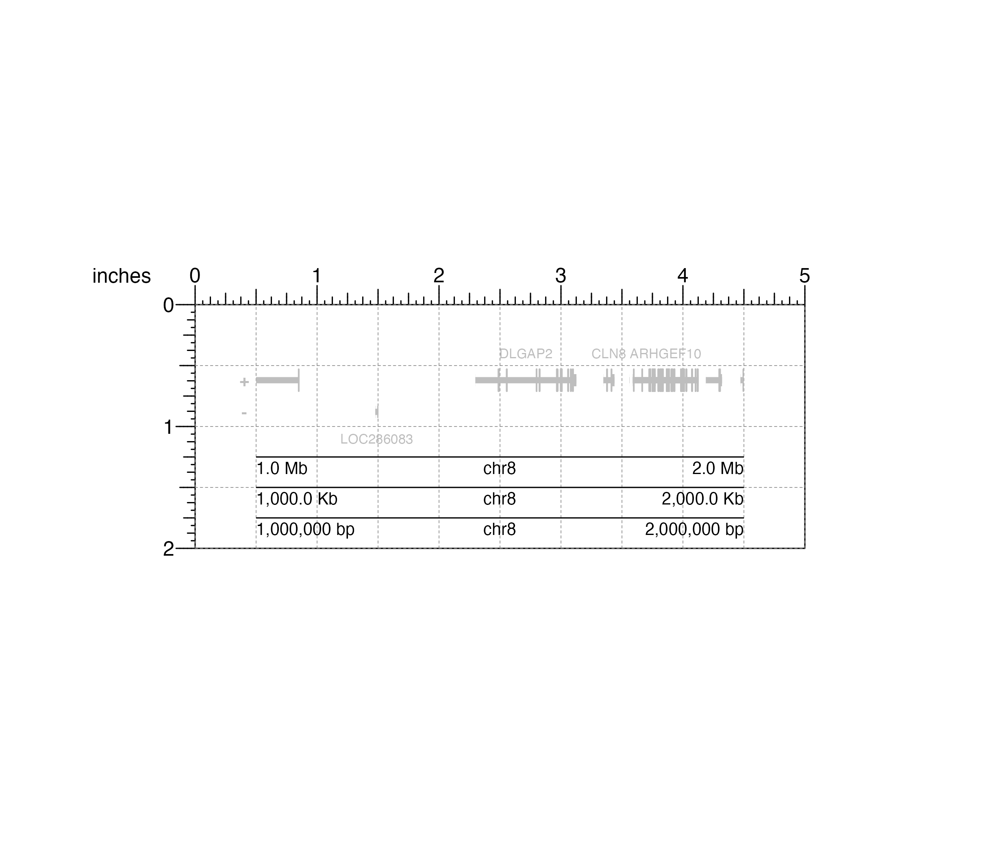
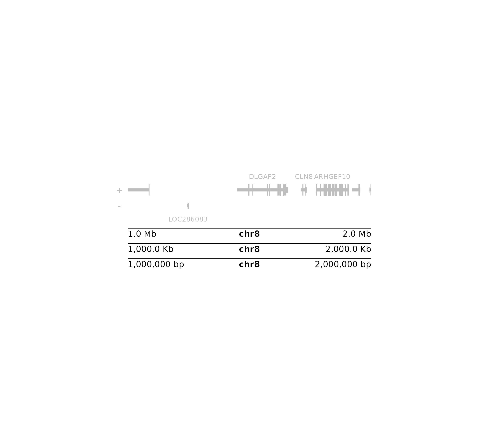

R/annoGenomeLabel.R
annoGenomeLabel.RdAnnotate genomic coordinates along the x or y-axis of a plot
annoGenomeLabel(
plot,
fontsize = 10,
fontcolor = "black",
linecolor = "black",
margin = unit(1, "mm"),
scale = "bp",
commas = TRUE,
sequence = TRUE,
boxWidth = 0.5,
axis = "x",
at = NULL,
tcl = 0.5,
x,
y,
just = c("left", "top"),
default.units = "inches",
params = NULL,
...
)Input plot to annotate genomic coordinates.
Genomic coordinates and assembly will be inherited from plot.
A numeric specifying text fontsize in points.
Default value is fontsize = 10.
A character value indicating the color for text.
Default value is fontcolor = "black".
A character value indicating the color of
the genome label axis. Default value is linecolor = "black".
A numeric or unit vector specifying space between axis
and coordinate labels. Default value is margin = unit(1, "mm").
A character value indicating the scale of the coordinates
along the genome label. Default value is scale = "bp". Options are:
"bp": base pairs.
"Kb": kilobase pairs. 1 kilobase pair is equal to
1000 base pairs.
"Mb": megabase pairs. 1 megabase pair is equal to
1000000 base pairs.
A logical value indicating whether to include commas in
start and stop labels. Default value is commas = TRUE.
A logical value indicating whether to include sequence information above the label of an x-axis (only at appropriate resolutions).
A numeric value indicating the width of the boxes
representing sequence information at appropriate resolutions.
Default value is boxWidth = 0.5.
A character value indicating along which axis to
add genome label. Sequence information will not be displayed along a y-axis.
Default value is axis = "x".
Options are:
"x": Genome label will be plotted along the x-axis.
"y": Genome label will be plotted along the y-axis.
This is typically used for a square Hi-C plot made with
plotHicSquare.
A numeric vector of x-value locations for tick marks.
A numeric specifying the length of tickmarks as a fraction of
text height. Default value is tcl = 0.5.
A numeric or unit object specifying genome label x-location.
A numeric, unit object, or character containing a "b" combined with a numeric value specifying genome label y-location. The character value will place the genome label y relative to the bottom of the most recently plotted plot according to the units of the plotgardener page.
Justification of genome label relative to its (x, y) location.
If there are two values, the first value specifies horizontal justification
and the second value specifies vertical justification.
Possible string values are: "left", "right", "centre",
"center", "bottom", and "top".
Default value is just = c("left", "top").
A string indicating the default units to use
if x or y are only given as numerics.
Default value is default.units = "inches".
An optional pgParams object containing relevant function parameters.
Additional grid graphical parameters or digit specifications. See gpar and formatC.
Returns a genomeLabel object containing
relevant genomic region, placement, and grob information.
## Load hg19 genomic annotation packages
library("TxDb.Hsapiens.UCSC.hg19.knownGene")
#> Loading required package: GenomicFeatures
#> Loading required package: AnnotationDbi
#>
#> Attaching package: ‘AnnotationDbi’
#> The following object is masked from ‘package:dplyr’:
#>
#> select
library("org.Hs.eg.db")
## Create page
pageCreate(width = 5, height = 2, default.units = "inches")
## Plot and place gene track on page
genesPlot <- plotGenes(
chrom = "chr8",
chromstart = 1000000, chromend = 2000000,
assembly = "hg19", fill = c("grey", "grey"),
fontcolor = c("grey", "grey"),
x = 0.5, y = 0.25, width = 4, height = 1,
just = c("left", "top"),
default.units = "inches"
)
#> genes[genes1]
## Annotate x-axis genome labels at different scales
annoGenomeLabel(
plot = genesPlot, scale = "Mb",
x = 0.5, y = 1.25, just = c("left", "top"),
default.units = "inches"
)
#> genomeLabel[genomeLabel1]
annoGenomeLabel(
plot = genesPlot, scale = "Kb",
x = 0.5, y = 1.5, just = c("left", "top"),
default.units = "inches"
)
#> genomeLabel[genomeLabel2]
annoGenomeLabel(
plot = genesPlot, scale = "bp",
x = 0.5, y = 1.75, just = c("left", "top"),
default.units = "inches"
)
#> genomeLabel[genomeLabel3]

## Hide page guides
pageGuideHide()
